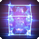

Traits raciaux
Traits raciaux
 Augmentation de caractéristique : +2 à un attribut et à son maximum, +1 à un autre attribut
Augmentation de caractéristique : +2 à un attribut et à son maximum, +1 à un autre attribut Langues : Commun, Vaisseau, Ombral
Langues : Commun, Vaisseau, Ombral Vitesse de déplacement : 7.5 mètres
Vitesse de déplacement : 7.5 mètres Compétences supplémentaires : Tromperie, Survie
Compétences supplémentaires : Tromperie, Survie Compétences d'Union : Sort Libérateur
Compétences d'Union : Sort Libérateur

Étreinte de la nature
 2 PA (Action)
2 PA (Action)
Le Vaisseau peut effectuer un test de Charisme (Tromperie) en tant qu'action ; l’environnement sur lequel il se trouve détermine le DD du jet. En cas de réussite, la zone autour du Vaisseau est transformée en une illusion protectrice dans un cube de 3 mètres pendant 1 heure. Toute créature qui souhaite voir les créatures à l'intérieur du cube depuis l'extérieur, et qui ne connaît pas déjà l'emplacement desdites créatures, doit réussir un jet de Perception contre le DD de Tromperie du Vaisseau, qui est de 8 + modificateur de Charisme + bonus de maîtrise. Les alliés à l'intérieur de l'illusion ne peuvent pas être effleurés ; toutes les attaques qui les effleureraient manquent leur cible. L'Étreinte de la nature peut être utilisée une fois par repos long.
 Passif
Passif